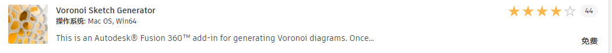
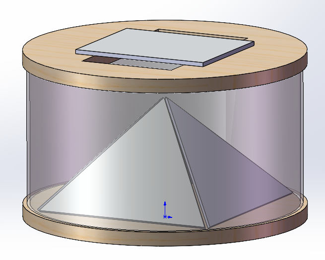
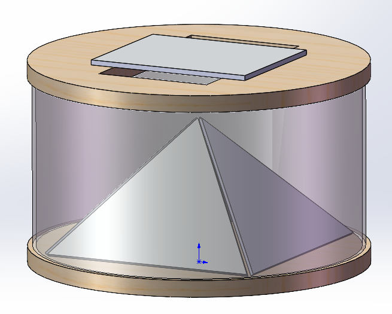

CAD
1. Modeling and assembly建模和装配
The content of our building module is holographic projection box
and interactive building blocks.
Everyone tries to complete a part model and finally assemble it.
我们组建模内容是全息投影盒子和互动积木，每个人尝试完成一个零件的模型最后进行装配。

First, draw a circle and enter the dimensions
首先，画一个圆，输入尺寸。
And then solid - stretch, and get the wooden bottom plate.
然后实体-拉伸，得到木底板。
Sketch the glass again, solid - stretch again.
再画玻璃的草图，再次实体-拉伸。
Next, draw the top cover.
接下来画顶盖。

Stretch and draw the acrylic sheet on the side.
拉伸画出侧面的亚克力板。

Create a ring array.
创建环形阵列。

Draw the phone body in the same way, and then the body is converted to parts.
同样方式画出手机实体，然后实体转换为零部件。

The GIF shows the sequential process of modeling.动图为建模顺序过程。

Assembly method reference
装配的方法参考：
https://help.autodesk.com/view/fusion360/CHS/?guid=Fusion_Assemble_tutorials_4_manual_joint_activity1_manual_joint_html

Assembly command is in this position, select a reference, then select another part of
the reference, select the assembly type, can be assembled
装配的命令是在这个位置，选中一个基准，再选中另一个零件的基准，选择装配类型，就可以进行装配
2. Add material添加材质

Right click on any part and select Appearance
右键任意零件，选择外观

Drag the material ball to the corresponding part position to apply the material
拖动材质球至相应零件位置即可应用材质
3. Add parameter添加参数
The Change Parameters command lets you create equations and relationships to control the size of objects in your Fusion 360 design.
Design > Modify > Change Parameters change parameters icon
You can create and name parameters as you add dimensions to sketches, or as you add and modify bodies.
When you create and name a parameter on the fly, Fusion 360 automatically adds it to your favorites, so that it is easy to find in the Parameters dialog.
As you specify values in different modeling tools, your favorite parameters are automatically suggested when you click inside a compatible value field and start typing.
“更改参数”命令可用于创建表达式和关系，以控制 Fusion 360 设计中对象的大小。
“设计”>“修改”>“更改参数”更改参数图标
在向草图添加尺寸，或在添加和修改实体时，可以创建和命名参数。
当您即时创建并命名参数时，Fusion 360 会自动将其添加到收藏夹，以便在“参数”对话框中轻松找到它。
在不同建模工具中指定值时，如果在兼容值字段内单击并开始键入，系统会自动建议您收藏的参数。
By adding driver parameters, models of different sizes can be completed quickly.
Find this feature under the Modifications TAB of the Sketch TAB.
通过添加驱动参数，可以迅速完成不同尺寸的模型。
在草图选项卡的修改小项下找到该功能。


4. Add a motion/assembly relationship添加运动/装配关系
We tried to add motion/assembly relationships to the parts, including rotation
and overlap. The GIF shows the assembly relationship between the parts.
我们尝试给零件添加了运动/装配关系，包括旋转和重叠。该动图展示了各零部件之间的装配关系。
5. Experience plug-in体验插件
适用于 Fusion 360 的插件、附加模块、扩展 | Autodesk App Store

在此添加刚刚下载安装的Voronoi模块，返回实体选项卡，就可以找到新增的模块图标了。使用该
插件可以很方便地生成一些密布的随机纹理
Add the Voronoi module you just downloaded and installed here, return to the Entities TAB, and you can find the new module icon. Using the
plug-in, you can easily generate a few dense random textures
6. Engineering drawing工程图

7. Introduction to SolidWorks


The use process of SolidWorks is very similar to that of Fusion360. General parts
and assemblies are different files, and the feature tree and Fusion360 timeline
bear similar functions.
SolidWorks的使用流程和Fusion360非常相似，一般零件和装配体是不同的文件，特征树和Fusion360
的时间轴承担相似的功能。如图为Fusion360的“浏览器”和“时间轴”。

 

8. Difficulty in modeling建模难点
One of the more difficult points in this modeling is the modeling of the holographic projection pyramid,
which is done by adjusting the manual dimensions
本次建模中比较困难的一个点是全息投影金字塔的建模， 通过调整手动尺寸完成。
SolidWorks可以比较快速地完成和Fuison360相似的建模效果。